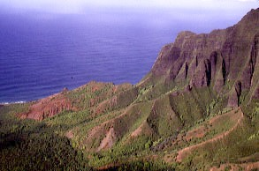
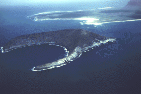
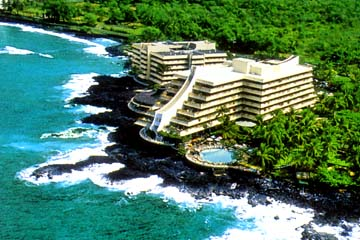
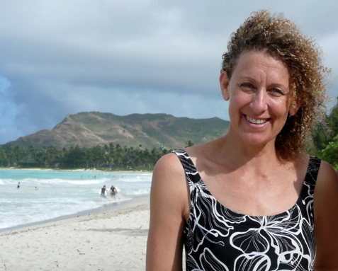
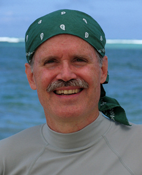
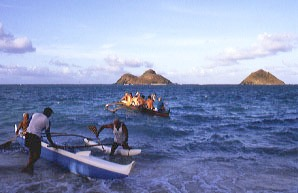

© Copyright U.S. Dive Travel Network. All rights reserved for all photos on this page.
Hot sand or happy feet? Clean, serene Sandy Beach glows on Oahu island's North Shore.
| Home / Dive Resorts / Live-Aboards / Snorkeling / Who We Are / Book a Trip |
HAWAII DIVING MAGIC: MILES of ISLES +
HAWAII SNORKELING VACATIONS +
HAWAII BEACH VACATIONS:
Kauai, Niihau, Waikiki Beach of Oahu, Maui &
the beautiful friendly Kona Coast on the
Big Island of Hawaii + a lush escape,
a verdant pearl, sweet li'l Molokai !
By John Hessburg
Founding Partner & General Mgr
U.S. Dive Travel Network
OK, take a break; it's time for a tropical riddle.
What do Tuesday night TV, Thanksgiving dinner with the folks & Hawaii
scuba diving -- also Hawaii snorkeling & Hawaii beach vacations -- all have in common?
Four words, funseekers. They're all: predictable, close, lively & cheap. Cheap entertainment, that is.
And that is the refreshing undercurrent of diving, snorkeling, surfing or lolly-gagging beachside in the Hawaiian Islands. Whether by boat or by shore, the scuba diving, the mellow snorkeling, & the beach basking in this oft under-rated archipelago are:
Shark-bashing aside, consider
the myopic myth that Hawaii diving is ho-hum, just because it is not the
Red Sea, Papua New Guinea or Fiji. Would you feel less alive on a coastal
highway, on a perfectly sunny day, if you were powering a navy blue mini-van
into the 'S' curves, instead of a brand-new flaming red Corvette?
If your honest answer is
yes, please read no further. Sorry amigo, your maritime appetites are way too exotic for Hawaii vacations.
Now, for the rest of us happy working stiffs, here's a little reality check.
It's true that virtually none of the Hawaiian shores offer the same mind-expanding
lushness of Fijian corals, nor the flamboyant diversity of rare reef species
in Papua New Guinea. But so what? Vacations need not be like edgy "reality TV", always reaching for the next EXTREME this or MEGA that. Sometimes aren't vacations supposed to be about, well, just VACATING? (Vacating the brain of stress & gritty city living, right?) OK, are we rollin' along together? Great, let's keeping movin' in true Aloha Spirit ...
Next issue: this lame stereotype
of "Hawaii as Waikiki" -- let's pound that one into the sand,
6 feet under. Hawaii is SO much more than loud aloha shirts & sunset
grass-skirt dance revues. While thousands of good people each year really have a blast in Honolulu, there is more to see in the Neighbor Islands, sunseekers. Let's set aside the Madison Avenue imagery. Instead, here is what Hawaii vacations ARE, what Hawaii diving IS, &
most of our local Neighbor Island friends agree:
My favorite greeting to
scuba newbies in Hawaii is to lampoon that old Dean Martin song, "When
the moon hits your eye, like a big pizza pie... '' The parody goes: "Put
your hand in a crack, if you don't get it back, it's a moray ...If it's toothy & brown & it's dragging you down, it's a moray..."
That's one way to get the "Don't-Touch-Don't-Filch" eco-message
across in Hawaii diving circles.
Let's move on. We dive Hawaii
because it's there -- pure & simple. Hawaii diving is a reliable alternative
to that sinus-searing jolt -- you know, the mammal diving reflex --
when you first plant your face in the way-cooooold water of Monterey, Catalina,
Puget Sound or the Jersey shores.
I'll concede that Hawaii diving is less like some Peter Max vista from Yellow Submarine & more like a sere Mexican high desert transplanted underwater. Still, this is a fun & fascinating world, self-contained, beautiful in its own right. And it sure beats muck diving in bone-cold mainland lakes with 10-foot "viz," mummified in a 7-mill wetsuit that chafes you where tropical sun jess don' shine.
Despite the intrusions of
mainland culture, in one very literal sense, Hawaii scuba diving is still exotic &
remote. Remember that the Hawaiian Island chain is actually the northern
apex of the Polynesian Triangle, also bounded by Easter Island & New
Zealand. The state of Hawaii is the most remote island cluster -- furthest
from any continental land mass -- of any Pacific island chain.
1,500 MILES
of HAWAIIAN ISLES !
The official Hawaiian Archipelago,
as depicted on Pacific charts, encompasses more than 130 islands, some
just random rocky pinnacles. The Hawaiian Island chain sprawls westward
from the Big Island, more than 1,500 miles, past even Midway Island, all
the way out to Kure Atoll. Old Hawaiian fishermen & charter skippers,
whom I've interviewed, say that from Niihau westward to Midway Island you'll
find some of the wildest, most shark-rich waters in the Pacific.
My wife Susan was blessed to grow up on windward Oahu, in a lovely
seaside village near Kailua, where she lived two decades & change. Now, after many
lively visits since 1990, to seven of Hawaii's eight Neighbor Islands,
we have acquired a keen taste for free diving & scuba diving on Niihau,
Kauai, Oahu, Molokai, Lanai, Maui & the Big Island. We have a sense
of how the winds & waves will treat us, no matter what month we show
up. The more we see, the more we know we have missed. It feels we are just beginning to understand
the deep soul of these wonderful isles after crossing the
Big Blue more than 24 times from the mainland since
1990 to relish the Hawaiian scuba diving, free diving, mountain hiking,
beach ramblin', boogie boarding & scores of photo treks. Hawaii diving never seems to disappoint us.
Caring for these magical islands is not unlike being parents of seven spirited
& precocious children. You really have no favorites -- only alternate
delights. Sometimes, some days, you just want to hang with one kid a little more than
another. No reason, just whimsy. Every day is different. No politics, just
the drifty breezy vagaries of "mana ohana" -- Hawaiian family
spirit.
NI'IHAU & KAUA'I:
We love Ni'ihau for its edgy wilderness
feel, it's brooding mystery & its effulgent reef life. We love Niihau's
sister island, Kauai, for its magnificent Waimea Canyon vistas, its spiritually
arousing 12 miles of Na Pali Coast Trail & the dynamic daily coral
& critter surprises of South Shore diving. Ni'ihau diving is almost a sacred experience.
Kauai diving offers heart-starting currents & critter surprises. Ni'ihau diving is
Hawaii's ultimate gift to the scuba diving world.
The BEST DIVING
SEASONS in HAWAII:
Barring weather aberrations, you normally
can count on the best diving conditions, on any island's leeward flanks,
from May through September. April & October are fringe seasons when
it's pleasantly warm, but rain & winds might be more frequent than
in summer. March can be one ripsnorting wind tunnel on several of the islands.
The rest of the winter is a toss of the dice for Hawaii dive travel.
Still, the November through
March period offers excellent diving options, if you avoid northern swells,
& shorelines exposed to the heavy easterlies, & if you seek the
vast volcano-shielded lees that Maui & the Big Island offer. Because
it's a smaller, rounder island than its sisters, Kauai's seas can offer
some Maytag action in mid-winter, but your specie sightings are well worth
the churn.
From November through March,
among our favorite shores for boat & beach dives are Southwest Maui,
South Lanai & the ever-reliable Kona Coast. There are many more primo
spots for Hawaii dive vacations, some so sacred to the locals that if we even mentioned them we'd
be, well, courting a stink-eye on our next trip. So we'll leave a little
to the imagination.

COME on in,
da WADDAH'S FINE,
JUSS DON' FO'GET YOU WETSUIT, BRADDAH!
Imagination is cool, but in some Hawaii
diving matters, we need to be specific. Take staying warm for example.
Clients often ask us, "Do I really need a 3-mill wetsuit for Hawaii?"
The answer is a resounding "yes!" - unless you're gifted with
the high-rev metabolism of a spider monkey. All year around, summer &
winter, we wear our trusty dusty 3-millimeter suits, ankles to neck &
heck with the shorties.
The shallow water temps
in winter might dip to the mid-70s Fahrenheit on many islands; while summer
brings you the balmy seas in the high 70s to low 80s. The warmest water
we've ever experienced while Hawaii diving has been off West Maui in late summer.
There seems to be some mystical heat pocket out there, & virtually
no thermoclines down to 60 feet at many dive sites. It's truly amazing.
But it takes more than warm water
temps to kindle a great dive vacation. Let's review some topside &
underwater highlights of Molokai island, then Kauai & it's sister isle Niihau, then Maui &
Lanai, then the Big Island or "da kine beeg eye-lin," in the
local Pidgin dialect.

Thrilling mountain bike tours atop 3,900-foot Molokai Sea Cliffs,
above Kalaupapa Peninsula, where Father Damien once worked.
© Starwood / Molokai Lodge.
The original Sheraton MOLOKAI RANCH LODGE
, is a classic hunting lodgy 4-star luxury getaway, with a huge Great Room & massive log beams & buttresses, a chandelier & wood paneling Robert Redford might envy in his mountain retreat. The crystal-clear pool, glowing green lawns & indigenous-flora garden are something to behold, & the meals are more art than cuisine. We were treated like ohana (family) by all the staff & it felt so much like home after a few hours, we had to pry ourselves away to take the tours.There's also the new Sheraton KAUPOA BEACH CAMP, is an astonishing place, unique in the Pacific -- a cushy tent-bungalow village on the wild west end of the island. There are 40 neatly built "tentalows" & they are 100% comfortable, clean, right near the two pocket cove beaches. These sturdy high-walled canvas bungalows, stretched over aluminum frames, are built atop spacious wooden platforms with a bathroom, huge hotwater shower & a private deck. The showers & toilets are super-clean & solar powered, designed impeccably for minimal impact on the earth. Honkin' big healthy wild turkeys strut the grounds like they own the place, & rare Hawaiian monk seals flop around happily all over the beaches, wherever they feel like planting their blubber. This is stylish tropical camping, amigos, & perfect for families with kids, big church groups, or a passel of dive shop buddies from Michigan. It's a cool new take on 21st century camping.

One of the many adventure highlights of Kauai
is the other-worldly beauty of the Na Pali Coast,
here washed by a red & amber summer sunset.
E6 chopper vista by John Hessburg, circa Dec. 1991.
In September of '92, Hurricane
Iniki lambasted Kauai, leveling homes, splintering boats & smashing
most of what it touched. The island has staged a brilliant comeback. Hotels
are in fine form, dive guides are working hard & the plant life is
bouncing back. There's still serious work to be done, but the worst is
over. Kauai is well worth the visit, just as it was pre-Iniki.
Locals boast that Mount
Waialeale, geologic core of Kauai, is the wettest place on Earth. Scientific
charts agree. Though the rain stays mainly in the island's center, it nurtures
incredibly lush verdure, flowers & palms on all flanks of the highlands,
right down to the sea. This island is green beyond green.
The Na Pali Coast Trail,
on Kauai's NW shore, is about 12 miles of the most magnificent tropical
hiking I've ever seen anywhere in Polynesia. It's like a living poem to
purity from a past century.
The most reliable diving,
most of the year, is along Kauai's protected South Shore, from Poipu west
to about Port Allen. The corals & fish are rebounding well from Iniki's
near kiss of death, according to instructor Kenny Bail, owner of Bubbles Below dive center, & one of the most
respected veteran dive guides in the state. There are spicier reefs, for
certain, near Hanalei to the North (where celebrity sightings are a dime
a dozen) & Barking Sands to the Southwest (don't even ask), but they
are simply harder to dive much of the year, due to fuel costs, exposure
to gnarly northern swell, & brisk chop from periodic Kona winds.
"Unusual critters,
that's what Kauai is all about," says Mr. Niki Konstantinou, an ace underwater
photographer & divemaster with Bubbles Below, who has studied Kauai dive sites for 15 years.
"I feel the best single critter site in Hawaii is at Amber's Arches,
near Kauai's Southwest corner," he exults. "It's a huge arch,
just painted on the ceiling with orange, yellow & green cup corals.
The colors are fabulous! You regularly find frogfish, puffers, hairy hermits,
bi-colored anthias, ghost shrimp & manta shrimp, plus dozens of slipper
lobsters & big sponge crabs."
Amber's Arches are dived
at about 55 to 75 feet, & nearby is a cool cave, low-ceilinged &
mysterious, that houses a couple healthy whitetip sharks. There also are
several large black coral trees with bristly turkeyfish lounging in their
branches, plus scads of long-nosed hawkfish. So what are you waiting for,
amigos del mar?

Among the most coveted dive destinations in the Pacific,
the Mystery Isle of Ni'ihau, last refuge for native Hawaiians,
is visited by only a lucky few scuba divers each summer.
Photo by Ken Bail, veteran scuba diving guide, Kauai.
For decades Niihau (NEE-ee-how), about 17 miles off the southwest coast of Kauai, has been strictly off-limits to interlopers. No person can set foot on this island without special permission, which rarely is granted by the island's owners. Mystery cloaks this strange little isle, because it is tightly held by the reclusive Robinson clan of Kauai, & because Niihau is the last pure sanctuary of native Hawaiian culture left in all of Polynesia. About 200 native Hawaiians still live full-time on Niihau. They practice many of the ancient village customs & speak the time-honored musical tongue of pre-missionary Hawaii.
For all these reasons, plus the fact there are only a few months each year when the winds & weather permit a safe crossing, the scuba diving is ultra-virgin all around Niihau. Some of the finest hard corals I've ever seen while Hawaii diving are common visual treasures at Niihau. Best time to try a crossing of the formidable Kaulakahi Channel is August or September. It's catch-as-catch-can. That makes the forbidden fruit all the sweeter.
Many popular Niihau dive sites
are in & around a croissant-shaped volcanic crater called Lehua Rock,
which looms like a twin brother to Maui's Molokini Crater. Here you'll
sometimes find the elusive Hawaiian monk seal. Fewer than 1,000 such seals
are believed to survive today. Then there's the windward east-side areas
of Nenue Point, Stony River & Pueo Point; & also the fabulous South
Point dive. There are still acres of virgin reef to be explored around
the eastern shores & the rarely visited west-side leeward sectors of
Nonopapa, Puuwai & Opaniau. Ah, the sea spirits that must cavort out
there!

One of the best-value dive vacations in Polynesia
for years to come will be here at Royal Kona Resort,
with ace scuba guides, good local lads in Kailua Kona.
Photo courtesy of Royal Kona Resort, the Big Island.
Perhaps Kona's prime classic
site is Turtle Pinnacle, about a mile north of the main Kona Pier, &
just a skosh from shore. Here you rarely get skunked on a turtle dive,
says Amanda Steenman, a cheerful & savvy diving guide, & former co-owner of Eco-Adventures dive center
in Kailua-Kona, who figures
she's dived this site more than 200 times.
Here the Hawaiian green
sea turtles are typically smaller than the Goliaths of South Kauai, or
West Maui, but they are often more plentiful. While I've seen Mack Truck
male turtles on Maui that tipped the Toledos at about 250 lbs, here on
the Kona Coast you'll find them more in the 150-lb range. At Turtle Pinnacle,
the bottom is about 60 feet deep, with the pinnacle crest at 35 feet. What
makes this easy dive most fun is the fact it's a turtle-cleaning station.
"I love seeing the interaction between turtles & the little sergeant
majors & tangs," Steenman says. "Sometimes there are tons
of fish hovering over the turtles' shells" - lunching gleefully on
parasites.
Another Kona Coast classic
is Kaiwi (Kah-EE-vee) Point, in the Pawai Bay area, about half a mile north
of the Kona Pier. "It's a gorgeous dive, probably the best corals
on the island," Amanda says. "There are lots of fish schools
& a nice little archway." Dives here vary from 30 to 100 feet.
There's a little something for everybody, from novice to pro. "One
time there were 4 or 5 spotted eagle rays in a group, just hanging around
us," Steenman recalls. That's something most divers wait a lifetime
to see.
You can't reach these special
Kona sites for shore diving, because they are located just off protected
Hawaiian lands. That makes them a tad more alluring, Kona dive guides agree.
Now from daytime to night time delights we go.
The best night dive on the
Kona Coast, bar none, & the Big Island's answer to Cayman's Stingray
City, is called Manta Madness, just off the Kona Surf Hotel point, south
of the village. This dive is in safe, shallow water; & it's not uncommon
for half a dozen or more mantas to buzz you playfully for an hour, even
with a jumble of stunned divers flashing lamps like mad. This Hawaii diving classic is a
certifiable hoot.
|
 |
 |
"Once I was trying
to get an underwater photo & I felt this nudge," Howeth remembers,
"but I knew there was no surge. So I looked up & my divers were
frantically pointing behind me, waving their arms. Then I turned &
saw a sea turtle, 3 feet in diameter, scratching his shell on my tank valve!"
Howeth says he & his
divemasters have a nearly 90% success ratio, usually 3 to 7 turtles at
a time, on their West Maui turtle dives. The best sea turtle zone runs
from Hekili Point north, past Lahaina, to Honolua Bay, Howeth says. From
turtles to temps, the delights of Maui diving are many.
OK, time for another reality
check. Forget the bluster and blarney of conventional wisdom -- the inside of Molokini
Crater is nothing to write home to Mom about. But there are some decent
corals way out in the crescent's middle reef, with lurking whitetips &
small reef fish. However, the drift dives on the outside of Molokini's
rim - now that's another story. Here you can find heady pelagic
adventures, reserved only for strong current divers, & well worth a
scuba diving day.
LANAI ISLAND DIVING: easily accessed via day charters from West Maui!
A simple story: Microsoft mogul Bill Gates got married here a few years ago. He rented most of the island's lodging for about a week. Lanai never has been the same.
But the hotels & reefs here were resplendent & world class long before Bill & Melinda tied the big knot. We felt powerfully compelled to check Lanai out; & we we did so with gusto -- topside, underwater, on the back-country trails, along the wilderness beaches & way out to the off-road sanctuaries frequented only by Lanai locals."There are awesome
geological formations that you won't find anywhere else in the world,"
Howeth says of Lanai's underwater lava sanctuaries. My dives at the Cathedrals,
Sergeant Major & Sergeant Minor are among the most memorable day trips
I've relished in Hawaii since 1990. Lanai is close to the best coral &
cavern setting of any reasonably accessible dive destination in the state.
On one free dive last year, I saw a magnificent eagle ray near the 30-foot
bottom swim to within three feet of my mask. Then he just parked for a
moment & my pulse went ballistic. He must have seen eyes as wide as
tank boots. That old ray's ludicrous yet endearing piglet snout was enough
to crack up even a British sentry. I will forever associate Lanai with
that otherworldly instant in time.
"I've seen up to seven
eagle rays at a time at Monolith (another dynamite South Shore site),"
says Howeth of his best Lanai diving adventures. "Once it looked like
a fighter squadron of airplanes. They were actually in a V formation!"
Howeth observes that Lanai's
drawing card is dual: "It's accessible AND spectacular. Usually you
get only one or the other in Hawaii. Plus you don't need long surface swims.
One time you might find a triton's trumpet, the next time a whale shark.
We average one whale shark a year. It's like - what's that huge wreck floating
over there. Hey, it's a whale shark! On Lanai, you get these magical days
all the time." Even on snorkeling trips, the locals agree.
Hawaii is
an island state that, once it grips your fancy, is not likely to let loose
any time soon. Yes Virginia, the coral bommies can be far apart in Hawaii,
& their life forms are seldom riotous; but it's a bona fide blast hovering
over them, maintaining your BC trim in the surge, spying on dozens of tiny
fun things happening at once -- shrimp, nudibranchs, neon-vivid wrasses,
jittery triggerfish -- all dancing around a coralhead the size of a Volkswagen
Beetle. That is the underwater Hawaii we love. And that's why Hawaii dive vacations are such
a splendid value, year after year. Hawaii dive packages are cheap, fun & safe. Pure & simple.
Got a hankering yet for more detailed info on any of these topics: Hawaii diving, Hawaii dive vacation, Hawaii dive vacations, Hawaii dive resorts, Maui, U.S. Dive Travel, Hawaii snorkeling, Maui diving, Kauai, Kauai diving, Big Island, Kona, Kona Coast, Kona diving, Niihau, Lahaina, Oahu, Hawaiian vacation, Molokini Crater, Eco-Adventures, Bubbles Below, Lahaina Divers, Hawaii vacations? If so, call us any time at 952-953-4124. We'd love to help.
If you come here, please
leave a little more than you take. And believe me, that will be tough.
Topside or under the sea, every day that you turn & look around you,
Hawaii will confer upon you another life-enriching gift or two. Most of
us go home quite deeply in her debt. Every time. Aloha. "Hawaii no
ka oi."
"Hawaiian kine ees da best!"

FOR MORE INFORMATION or RESERVATIONS:
Please feel free to contact:
John Hessburg, General Manager
Susan Hessburg, Operations Manager
U.S. DIVE TRAVEL Network
PMB 307 / Suite # 116
15050 Cedar Ave. S.
St. Paul, MN, USA 55124-7047
Voice Mail: 952-953-4124
E-mail: divetrip@bitstream.net
Website: www.usdivetravel.com
******************************************************



There's still a refreshing sense of Old Polynesia
on the seven main Neighbor Islands of Hawaii.
Both topside & underwater, color is everywhere !
Photo by John Hessburg, U.S. Dive Travel.
IMPORTANT REMINDER about PRICES & TARIFFS:
All dive package prices listed here are subject to possible change in this steadily evolving travel market. Lodging, side tour & diving prices are traditionally stable, while air prices can fluctuate daily. Until air tickets are issued, all airlines reserve the right to change airfares without notice -- an industry standard per FAA rules. We at U.S. Dive Travel will price-protect you to the utmost of our professional ability; & that has been our pledge for one decade now. Our tropical vacation experts normally secure excellent wholesale discount air tickets for our clients who book early enough to secure limited seats in the best price categories. Remember please, the federal government has deregulated all U.S.-based airlines, so only they control their pricing -- not any travel professionals. Early is good when seeking the best air ticket rates.
Unless specifically noted, these above scuba diving packages are prices for only the land-based portion of the dive resorts, in most cases reflecting double-occupancy rooms. At many dive resorts, there will be no triple-occupancy rooms offered. Some exceptions will be noted. International air tickets & commuter "island-hopper" seats are always extra above these land costs. Nominal service fees are also extra for air tickets & the vessel + side tour components. The baseline tariffs for all clients start at $45 per person for the land portion + $25 pp for the air tickets. Late-booking clients may receive slightly higher tariffs on the lodging + diving at many of our dive resorts.
The preferred payment mode for all of our dive resorts, side tours & air ticket specials is by e-check, ACH or conventional wire transfer in U.S. dollars. All clients living outside the USA or Canada will need to pay for their dive vacations via direct wire transfer only. No personal checks will be accepted for the land portion of any reservation. Thank you for your gracious understanding. Our service level is the highest & our prices the lowest in this industry, & thus we need to preserve a reasonable margin. For published-fare air ticket bookings, USDT always accepts Visa & Mastercard.
So if you want to dig further into these topics: Hawaii diving, Hawaii dive vacation, Lahaina Divers, Hawaii dive vacations, Hawaii dive resorts, Maui, Hawaii snorkeling, Maui diving, Kauai, Big Island, Kona, Kona Coast, Kona diving, Niihau, Lahaina, Hawaiian vacation, Molokini Crater, Oahu, Hawaii vacations -- please feel free to call us any time! We would love to help you any way we can.
Best fishes too!
>////*> <*\\\\<
John Hessburg & Susan Hessburg, Mgrs.
U.S. Dive Travel Network.
| Home / Dive Resorts / Live-Aboards / Snorkeling / Who We Are / Book a Trip |
© Copyright U.S. Dive Travel Network.